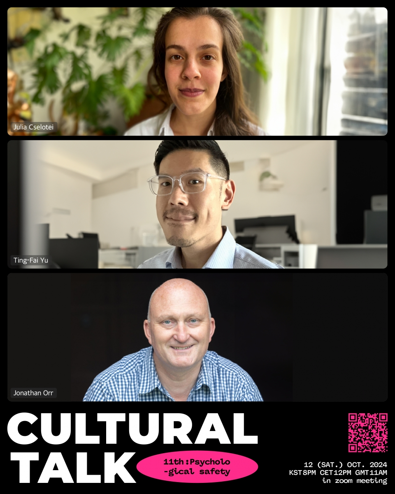
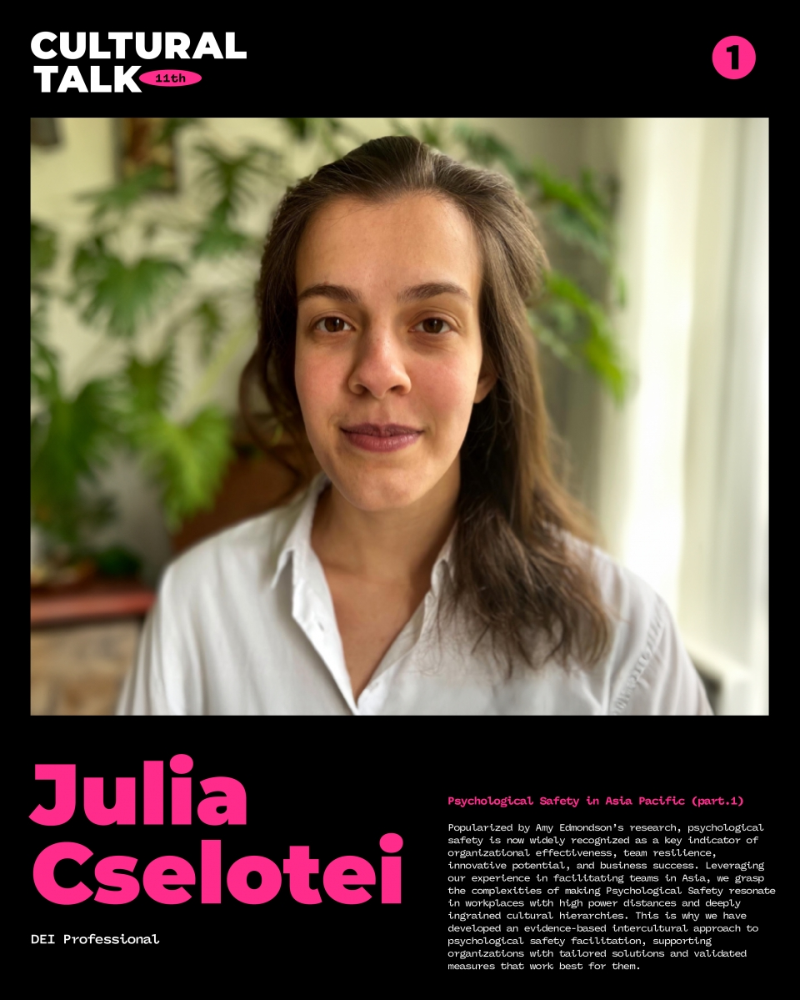
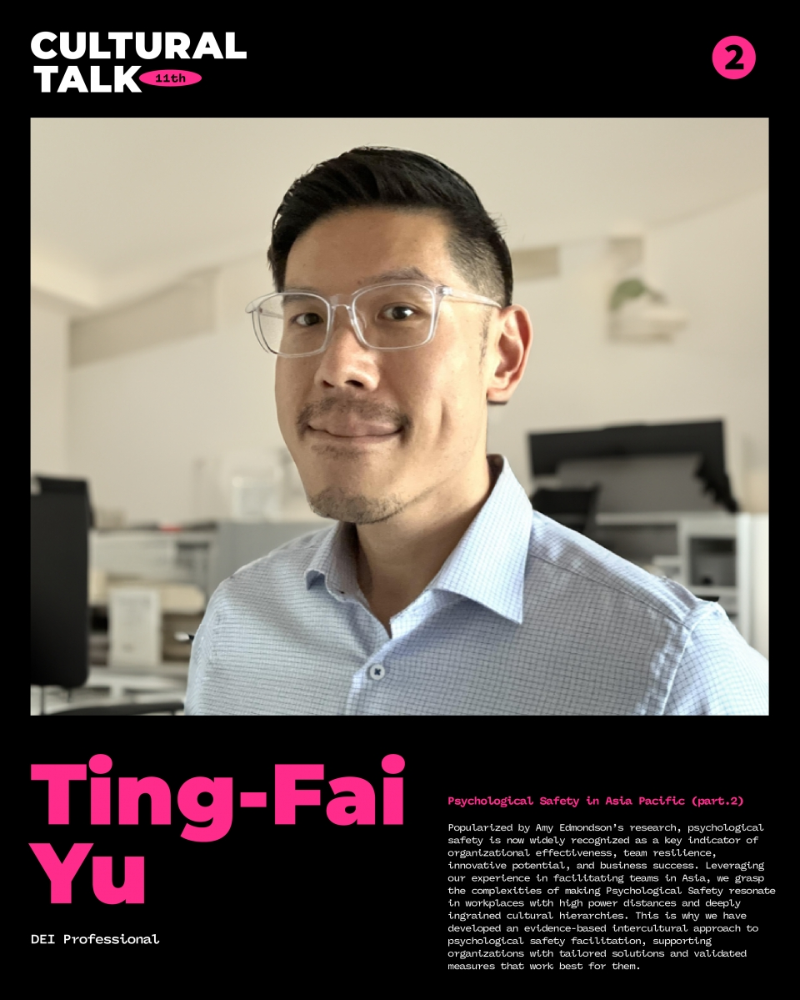
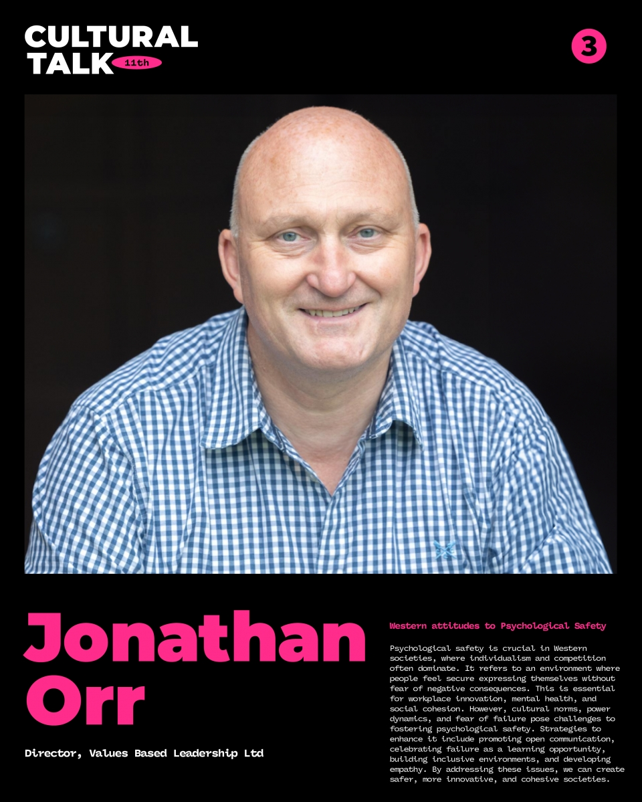

11th Cultural Talk For Diversity
Theme: Psychological Safety

Event Details
Date: 12 October, 2024
Time: 20:00 (KST) / 12:00 (CET) / 11:00 (GMT)
This event has already taken place and is now part of our archive.
Conference Overview
Psychological safety is often discussed as a universal good, but the paths to building it can differ dramatically across cultures. This session compared Asia-Pacific and Western perspectives to examine how hierarchy, communication norms, and cultural expectations shape whether people feel able to speak, contribute, and take interpersonal risks.

Julia Cselotei
DEI Professional
Julia Cselotei works in DEI and team development with a focus on helping organizations create more inclusive and effective environments. Her work includes practical approaches to making complex concepts meaningful across different cultural settings.
Topic: Psychological Safety in Asia Pacific (Part 1)
Julia introduced the relevance of psychological safety in Asia-Pacific workplaces, especially where high power distance and strong hierarchy affect participation. Her talk framed why evidence-based, culturally aware facilitation is essential.

Ting-Fai Yu
DEI Professional
Ting-Fai Yu brings a DEI perspective grounded in facilitation and organizational support. His work emphasizes translating inclusion concepts into approaches that resonate in real workplace cultures.
Topic: Psychological Safety in Asia Pacific (Part 2)
Building on the first presentation, this talk examined how psychological safety can be adapted for organizations in Asia while respecting local realities. It highlighted the need for tools and measures that work within, not against, cultural context.

Jonathan Orr
Director, Values Based Leadership Ltd
Jonathan Orr is Director of Values Based Leadership Ltd and works on leadership and values-driven development. He focuses on how people and organizations can build environments that support trust, growth, and healthier collaboration.
Topic: Western Attitudes to Psychological Safety
Jonathan explored why psychological safety matters strongly in Western contexts shaped by individualism and competition. He discussed practical barriers such as fear of failure and power dynamics, along with strategies for more open and inclusive communication.